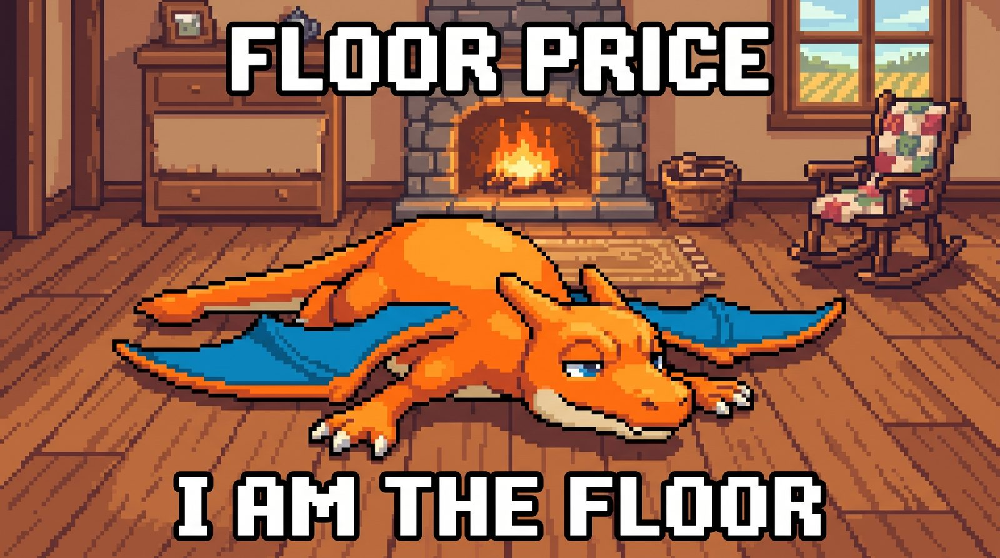
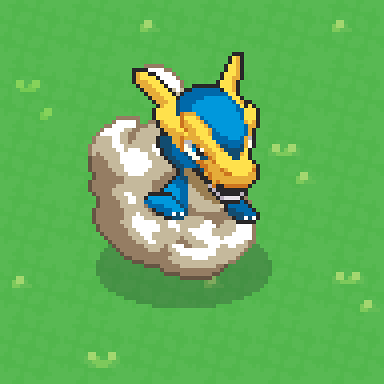
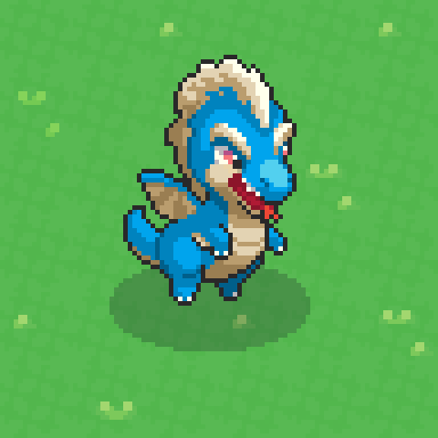
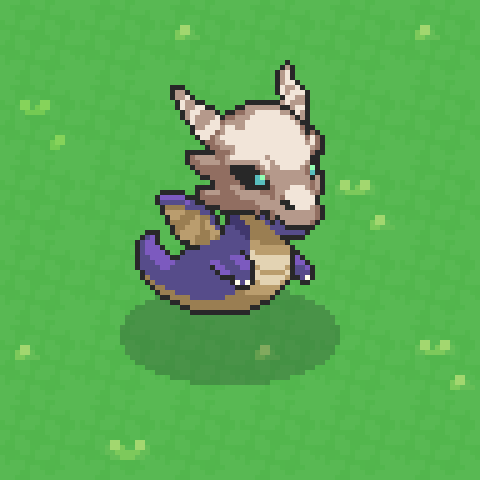
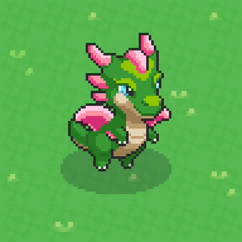
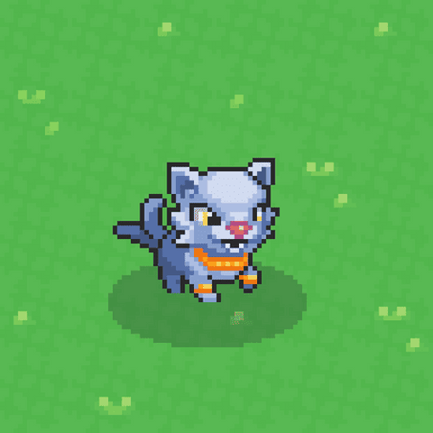
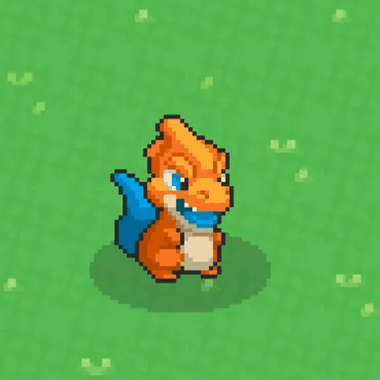

The Genesis collection opened on October 14. Every one of the 11,265 sealed eggs — the 10,000 minted on Ronin in September plus 1,265 airdropped on the eve of the reveal — now shows what was inside, and for nine eggs in ten the answer is the same small orange fire-type: Brazito. The rest of the collection is 50 Malandrix, 50 Salu, 10 Kova, 5 Ondi, 3 Raigo, and 831 Bad Eggs that reveal nothing at all.
The team opened the eggs on a live reveal stream (Adam, Craig and Matt, with about 250 trainers in the chat) and used the hour to say a good deal more than the reveal: internal beta testing starts next week, early access is being aimed at the end of November with two to three weeks’ notice, the four egg colors never meant anything, the battle bench is growing to six, and the metadata still doesn’t carry each monster’s unique stats — that is a separate, smaller reveal closer to launch. Here is all of it: the six creatures with their pictures, types, rarities and abilities; our own count of the collection, egg by egg; the odds a minter actually faced; what the airdropped eggs held; and what the stream said, point by point.

Meet the six
The working names the docs had used since August — Storm, Echo, Ghost, Bloom — are retired. The eggs opened under real names, and the four Legendaries turn out to be one family: a suite of ancient dragons, all four Dragon-type, that look alike because they are related and look different because, as Craig put it on the stream, they went down different paths. There is a backstory behind them, and the team says it comes out after the game launches.
-

Raigo was “Storm”
LegendaryDragon3in the collection · 0.027% · 1 in 3,755Stormcharged — Yakkamon within range work 2× as fast (large AOE)
Hatched from a stone split by lightning and still carrying the charge, by its own metadata. 75 exist in total: 50 are for the trainer airdrop, 1 for a raffle, the rest for future events.
-

Ondi was “Echo”
LegendaryDragon5in the collection · 0.044% · 1 in 2,253Yakkamon within range produce double resources (small AOE)
Hums a low note across the farm, and whatever hears it comes back carrying more. 275 exist in total: 203 for the trainer airdrop, 1 for a raffle, the rest for future events.
-

Kova was “Ghost”
LegendaryDragon10in the collection · 0.089% · 1 in 1,127Unsleeping — always at maximum stamina on the farm (small AOE)
Wears the skull of a beast long gone and hasn’t slept since, standing watch while the farm rests. 400 exist in total: 256 for the trainer airdrop, 1 for a raffle, the rest for future events.
-

Salu was “Bloom”
LegendaryDragon50in the collection · 0.44% · 1 in 225Regenerates a % of Max HP every combat turn
Petals bloom from its scales with every wound it shrugs off. 2,000 exist in total: 1,500 for the trainer airdrop, 1 for a raffle, the rest for future events.
-

Malandrix
RarePsychic50in the collection · 0.44% · 1 in 225Normal working Yakkamon — no ability yet
A quick-pawed trickster in a golden collar it never paid for. 4,000 exist in total: 3,000 go to ranks 2,001–5,000 in the trainer airdrop, the rest to future events.
-

Brazito
UncommonFire10,316in the collection · 91.6%Normal working Yakkamon — no ability yet
A small orange hothead in a blue cape, sure it is the hero of every story told on the farm. 15,000 exist in total; more than two-thirds are now out, and the team said on the stream the rest is not infinite.
Pictures are the reveal art as it appears on each NFT (© Thought Farm). The one-line descriptions are our paraphrase of the text each NFT carries. One warning for anyone cross-checking: as of October 14 the picture column on the docs’ Yakkapedia page does not match its name column (the page itself says images will be tweaked), so go by the NFTs, where name and art travel together.
The collection, counted
We read the Monster and Status traits of every token in the collection from the official metadata endpoint after the reveal. The totals match the marketplace’s trait filters to the egg.
| What hatched | Rarity · type | Count | Share of 11,265 | One egg in… |
|---|---|---|---|---|
| Brazito | Uncommon · Fire | 10,316 | 91.58% | 1.1 |
| Bad Egg (reveals nothing) | — | 831 | 7.38% | 13.6 |
| Salu | Legendary · Dragon | 50 | 0.44% | 225 |
| Malandrix | Rare · Psychic | 50 | 0.44% | 225 |
| Kova | Legendary · Dragon | 10 | 0.089% | 1,127 |
| Ondi | Legendary · Dragon | 5 | 0.044% | 2,253 |
| Raigo | Legendary · Dragon | 3 | 0.027% | 3,755 |
| All Legendaries | 68 | 0.60% | 166 | |
| Rare or better | 118 | 1.05% | 95 | |
| Total | 11,265 | 100% | ||
Two things to notice before the odds. The 68 Legendaries and 50 Rares the free mint page promised are all there, to the unit: 3 + 5 + 10 + 50 and 50. And the pool they were drawn across is 11,265 eggs, not 10,000 — the airdropped eggs were part of the same draw, which is why the split below matters.
Minted egg or airdropped egg: where each one landed
Token IDs 1–10,000 carry Origin: Free Mint; 10,001–11,265 carry Origin: Airdrop. Counting the two ranges separately:
| Hatched | Minted eggs (#1–10,000) | Airdropped eggs (#10,001–11,265) |
|---|---|---|
| Brazito | 9,068 | 1,248 |
| Malandrix | 38 | 12 |
| Salu | 46 | 4 |
| Kova | 9 | 1 |
| Ondi | 5 | 0 |
| Raigo | 3 | 0 |
| Bad Egg | 831 | 0 |
| Total | 10,000 | 1,265 |
So five of the 68 Legendaries and twelve of the 50 Malandrix went to airdrop recipients rather than minters, every Bad Egg sits in the minted range, and the free mint page’s “68 Legendaries, 50 Rares and 9,882 Uncommons inside the 10,000” came out as 63, 38 and 9,068, plus 831 blanks. Not a broken promise so much as a pool that grew by 1,265 eggs before it was drawn — and, as the next section shows, the Bad Egg rule gave honest minters that dilution back.
The odds a minter actually faced
| For one egg… | Legendary | Malandrix | Brazito | Bad Egg |
|---|---|---|---|---|
| Minted, any egg (10,000) | 0.63% · 1 in 159 | 0.38% · 1 in 263 | 90.7% | 8.3% |
| Minted, clean egg (9,169) | 0.69% · 1 in 146 | 0.41% · 1 in 241 | 98.9% | — |
| Airdropped egg (1,265) | 0.40% · 1 in 253 | 0.95% · 1 in 105 | 98.7% | none |
| Whole collection (11,265) | 0.60% · 1 in 166 | 0.44% · 1 in 225 | 91.6% | 7.4% |
A Bad Egg is not a random outcome — it is a verdict on the account that minted it — so the line that describes a fair minter’s egg is the second one: roughly one clean egg in 146 held a Legendary, one in 241 a Malandrix, and the other 98.9% a Brazito. In September this site put the published odds at about one clean egg in 147 for a Legendary, on the team’s promise that none would land in a Bad Egg; the realized number is one in 146. Airdropped eggs did a little better on Rares and a little worse on Legendaries, which is what variance looks like at these counts, and none of them was flagged.
One question the chat asked — why was there not a single Legendary under token #100? — got a plain answer: there were very few Legendaries to place, and the draw was random with a published seed (Adam remembered it as something like “Yakkamon Genesis”) so anyone can check it. In our count the first egg better than Brazito is #114, a Malandrix, and the first Legendary is #157, a Salu.
831 Bad Eggs — fewer than the 973
On the September 17 stream the team put the Bad Egg count at 973 and called the review essentially complete. The collection opened with 831 flagged, so 142 eggs lost the flag between then and the reveal. The team hasn’t said why; the readings that fit are successful appeals, or a final pass before the reveal that cleared borderline cases. Either way, 831 is now the number, and it is final in the only sense that matters: the flagged eggs revealed nothing, and a Bad Egg stays a Bad Egg.
What a Bad Egg is hasn’t changed. Each one’s own NFT text says it was marked because one person was controlling multiple wallets to cheat the mint, and that it will not reveal anything. On the stream Adam confirmed the bad eggs are still there and have not revealed into any Yakkamon that can be used in the game. They remain NFTs, which means they remain listed on marketplaces: the picture is a cracked egg rather than a creature, and the Status trait reads “Bad Egg” instead of “Revealed”, so check that trait before you pay for anything (what a Bad Egg is, in full).
What the abilities do — and don’t, yet
| Yakkamon | Working name | What it carries | Where it works |
|---|---|---|---|
| Raigo | Storm | Stormcharged — Yakkamon within range work 2× as fast | Farm aura, large AOE |
| Ondi | Echo | Yakkamon within range produce double resources | Farm aura, small AOE |
| Kova | Ghost | Unsleeping — always at maximum stamina on the farm | Farm aura, small AOE |
| Salu | Bloom | Regenerates a % of Max HP every combat turn | Battle passive |
| Malandrix | — | Normal working Yakkamon — no ability yet | Utility, unrolled |
| Brazito | — | Normal working Yakkamon — no ability yet | Utility, unrolled |
Three of the four Legendary abilities are farm auras, not battle skills, and only Salu’s is a combat passive. The difference between a small and a large AOE is the one the free-mint stream defined: small touches the job the monster stands on and the two or three nodes beside it; large covers a whole section of the farm. That makes Raigo — the only large-AOE Legendary, three in this collection and 75 in existence — the scarce one in every sense. The confirmed stacking combo from that stream, Storm plus Echo, is now Raigo plus Ondi: twice the speed on top of double the output on the same patch (how auras and stacking work).
The two words doing the most work in that table are no ability yet. On the Legendaries the ability is written into the NFT as a trait; on Malandrix and Brazito there is no such trait, only the “normal working Yakkamon” line. The free-mint stream said Rares and Uncommons roll a utility at generation, independently of their stats, so our reading is that those rolls haven’t been written yet rather than that these two tiers have none — the docs’ own fine print says utility will be tweaked to fit the finalized gameplay. The stream added a second gap: the metadata does not yet reflect the unique stats each Yakkamon will have, because beta testing will change how they are balanced, and there will be “another little small reveal” about them closer to launch. In other words, what you can read on your NFT today is the species, the rarity, the type and (on a Legendary) the ability. The numbers come later.
The names, the dragons, and what the egg colors meant
| Working name (docs, Aug–Oct) | Real name | Trainer airdrop ranks |
|---|---|---|
| Storm | Raigo | 1–50 |
| Echo | Ondi | 1–3 and 51–250 |
| Ghost | Kova | 4–10 and 251–500 |
| Bloom | Salu | 501–2,000 |
| the Rare | Malandrix | 2,001–5,000 |
| the Uncommon | Brazito | — (the free mint’s monster) |
The names are a deliberate mix. Adam said the Yakkamon are heavily influenced by Australian culture and by Brazilian culture, so expect Portuguese words and Australian slang through the roster — and offered his own guess that Brazito, from brazo, means something like “little arm”, which the chat promptly turned into “Team Brazito”, the “Brazitoverse” and, by the end, the Brazito Army. Why the common monster is a fire-type: because Adam loves fire types, and because a free mint could not hand everyone a Legendary without making the Legendaries worthless and the game lopsided. The four dragons, he said, look epic on purpose, and the small supply is the point.
The feedback the team took on the chin: one trainer called the reveal disappointing because the four egg designs looked elemental and everyone assumed four different monsters. They weren’t. The desert, grass, volcano and fourth backgrounds were cosmetic, there to make the sealed collection less boring, and Adam called the criticism fair. The reason the reveal is deliberately thin is a design choice the team repeated three times: they did not want to release many Yakkamon in a pre-launch mint. Most of the roster is meant to be found in the game, and the elemental variety, the shinies and the variations are being reserved for hunting. Most Legendaries exist only through this mint and the trainer airdrop, but a small supply of them will appear in-game through hunts, and there will be Legendaries and Rares that can only be obtained by playing.
How to see what your egg became
- On Ronin Market, open your egg’s item page and use Refresh metadata. It can take a while to come through; the team also ran a refresh script across the whole collection during the stream.
- Instantly, read the NFT itself:
api.yakkamon.com/metadata/followed by your token ID. The raw text shows the Monster, Rarity, Type, Supply, Origin (Free Mint or Airdrop) and Status (Revealed or Bad Egg), plus the Ability on a Legendary. - If a wallet app still shows an egg, it is the app’s cached image. The chain has moved on; refresh or wait.
What the reveal stream said, point by point
- The eve-of-reveal airdrop. On October 13 sealed eggs went to the top 1,000 spenders on the Ronin network (Ronin’s own push to bring its gamers in), the top 100 trainers, the top 100 Sunflower Land players, the fan art competition winners, and a group of content creators, moderators and supporters. The metadata counts 1,265 eggs with Origin: Airdrop, against the 1,500 the free mint page had announced as “distributed out in special events before the reveal”; whether the remaining 235 come later or were never needed wasn’t said.
- The Legendaries are mostly still to come. The big allocation goes out through the trainer dashboard: the top 2,000 on the leaderboard get a Legendary, and 2,001–5,000 get Malandrix, “the psychic rare.” Adam’s advice to anyone whose egg was a Brazito: if you want a guaranteed Legendary, that is where it is — rank high and hold it. The raffle tickets were not used for this reveal; they are for the final trainer airdrop, where a small number of Legendaries will be raffled (the Yakkapedia reserves one of each).
- Internal beta next week. The team is “very, very, very close”: internal beta testing opens next week, which Adam read as the signal that the core mechanics are locked and the work is now polish and tuning. It is a tiny, invitation-only group — you cannot apply — because the team runs its betas as real-time daily conversations with every tester. Early access itself is the broad beta, and expect leaks once testing starts.
- Dates. If all goes to plan, early access opens in mid-to-late November — later in the stream, “the end of November.” The exact date, and the leaderboard finalization that precedes it, will be announced two to three weeks in advance. Adam declined to name the day on stream but said the studio has been good at hitting deadlines for five years. The official docs still say November or December; the docs remain the record until they change. “More key dates soon.”
- Battles (Matt). Three Yakkamon on the field and up to three on the side who can jump in at certain points through player actions — “three to six” is what beta will test. The skill work now is about identity: each species gets a vibe (is the little mouse scared or excited, and how do you show it?). Skills are generated, so two Yakkamon of the same species can carry slightly different skills, some rarer than others — the point being that you hunt for the one with the rare skill. There are farming skills outside battle too. Asked whether battling met expectations, Adam said it exceeded them. AI has been used for animations, sequencing and UI, not for the core design.
- Types. Asked whether Psychic, Dragon and Fire are the only types, Matt said there are a lot: electric, the usual fire, water and grass, and a spirit type rather than a ghost type, laid out on a type chart like a flow diagram and “a little bit different than Pokémon.” The full chart is still unpublished.
- Art and sound (Craig). The Yakkamon are being animated now — until this week the team played with static images, and Adam’s first look found “a lot of personality” (and a crab). Every creature gets its own sound for walking and interacting, so you can hear which Yakkamon is doing what without looking; 168 species sounds are queued to go in. A hunting-zone screenshot was shared as the kind of region the team can now build.
- Why Ronin. Asked by Craig, Adam gave two reasons: Ronin is the chain with the most real gamers — people behind computers who want to play games as games — and the Ronin team backs studios of any size without demanding exclusivity, VC funding or a token allocation. Many Sunflower Land players were already there.
- Brazito supply. The Yakkapedia gives Brazito a supply of 15,000; with 10,316 out, Adam noted more than two-thirds is allocated and “not many left” — the supply is not infinite. A squad of Brazitos, he added, will be useful for forging in the game.
- Fan art competition. The winners were posted on X and every one of them received a Yakkamon. AI was allowed this time, and the team saw real creativity in the videos, memes and gifs; future competitions to design a Yakkamon that goes into the game will need hand-drawn, high-quality work, and no-AI artist competitions are planned. Craig’s favorite was an animated duck going berserk in a fight; Adam’s were the Star Wars memes. A shout-out went to Gabby and the art team, whose pixel-art personalities the community has been reading correctly.
- The game in a sentence. Asked what the gameplay even is, Adam called it a mixture of a builder, a battle game and a hunting-and-discovery collectible layer with lore — and promised more screen shares and “leaking the battles” now that testing is about to start.
- The sign-off. “Welcome, everyone, to the Brazito Army.”
What it means
- The floor is a monster, not a blank. With 91.6% of the collection identical, the marketplace is now effectively a one-item market plus 118 exceptions. The price of a Brazito is the floor; undercutting the pack buys nothing. Scarcity lives in the 68 Legendaries and 50 Malandrix — one percent of the collection — and above all in the three Raigo, which are three of only 75 that will ever exist.
- The leaderboard was always the main event. This reveal placed 68 Legendaries. The trainer airdrop places 2,009 — thirty times as many — and 3,000 Malandrix against this collection’s 50. If a Legendary is what you want, the free mint was never the route; the top 2,000 is, and the stream said the lock comes with two to three weeks’ warning.
- Brazito is a worker, and a capped one. It is an Uncommon with a type (Fire, which under type locking decides what it can gather), a supply ceiling of 15,000 of which 4,684 are unallocated, and a utility slot that reads “no ability yet.” It deposits into the game at early access like any other Genesis Yakkamon. A floor-priced monster is still a monster.
- The pool grew, and the Bad Egg rule paid for it. Drawing the 68 and the 50 across 11,265 eggs instead of 10,000 cost minters a few Legendaries and a dozen Rares; excluding 831 Bad Eggs from the draw gave the fair minter almost exactly the odds the page had promised. The two effects cancel to within a rounding error.
- Today’s metadata is a draft. Unique stats are not on it; Malandrix and Brazito have no utility on it; the docs say images and utility will be tweaked. Anyone pricing an individual Yakkamon — as opposed to a species — is pricing information that does not exist yet.
- The flag count moved down, not up. 973 to 831 is the first time the Bad Egg number has fallen. Flags can be lifted; the eggs they were lifted from hatched normally. It does not change the advice to buyers, because 831 is still one listing in thirteen.
What to do now
- If you hold eggs: refresh the metadata, read the NFT to confirm what you have, and if you plan to play, keep it — Genesis Yakkamon deposit into the game at early access. If you sell, price the species, not the picture.
- If you’re buying: open the item page and read two traits before paying — Status (Revealed, not Bad Egg) and Monster. Bad Eggs are still listed, and a listing title tells you nothing.
- If you want a Legendary: the trainer airdrop is the route — top 2,000 for a Legendary, 2,001–5,000 for Malandrix. Rank, then hold the rank; the lock is announced two to three weeks ahead (how the leaderboard works).
- Everyone: watch for the unique-stats reveal before early access, the beta leaks the team all but promised, and the key dates it said are coming.
Six questions we’d put to the team
- Will Malandrix and Brazito get a utility written into their metadata, and is it rolled per individual, as the free-mint stream described?
- When do the unique stats land on the NFTs, and will holders see them before early access?
- What happened to the 142 Bad Egg flags between September 17 and the reveal — appeals, a re-review, or something else?
- Is 1,265 the final airdrop count, or do the remaining 235 of the announced 1,500 go out later?
- Do airdropped trainer Legendaries arrive revealed, and how long after the leaderboard lock?
- Will the four dragons’ backstory, and the Australian-and-Brazilian naming, get a docs page?
api.yakkamon.com/metadata/), read for all 11,265 tokens on October 14, 2026 after the reveal; the counts match the trait filters on the marketplace. The abilities and total supplies are the official Yakkapedia as of October 14, 2026. The stream statements are from the team’s October 14 reveal stream (Adam, Craig and Matt), paraphrased; dates spoken on a stream are aims, and the docs’ Important Dates page is the record. The minted-versus-airdropped split, the odds table, the reading of the 142 lifted flags, the airdrop arithmetic and everything under “What it means” are ours. The creature pictures are the reveal art on the NFTs (© Thought Farm, usage); the hero image is our own.Read next
- The Genesis Yakkamon on the Gameplay page — the six on cards, with the abilities and the collection numbers kept current
- The Free Mint Is Complete — how the 10,000 sold out, and what a Bad Egg is
- What’s inside an egg, by the odds — the September math this reveal just tested
- The Genesis Legendaries — the airdrop ladder that places the other 2,009
- The collection page, explained — where Genesis Yakkamon trade and how to read a listing
- The September 17 stream — where the 973 and the mid-to-late November aim first came from